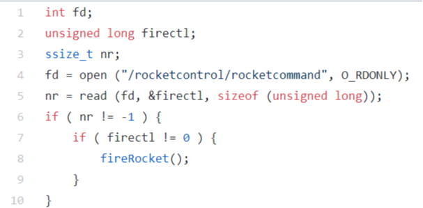
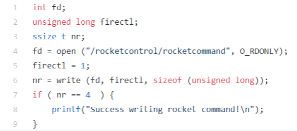

Select all of the combinations of commands which correctly open a new file for writing at /existingpath/newfile which will be readable by anyone assuming a umask of 022
Select any problems with the following code snippet:

You should always use O_NONBLOCK with the open() command, even if your application thread does not have any other work to do while waiting to read from an open file descriptor.
Select any problems with the code below (select any which apply)

write() commands typically do not complete writes to disk before returning success status.
A write() command writes directly to disk, meaning a successful response indicates data has been stored on disk.
Select the best way for synchronizing file write to disk for a single file with descriptor fd.
Seeking 1GB past the end of the file and then writing a single byte to the file will increase a Linux filesystem's disk usage by approximately 1GB.
Seeking past the end of the file with lseek() is allowed, and can be used to create sparse files.
Using select() or poll() is generally a more preferrable solution than using O_NONBLOCK for non blocking file I/O.
Select any reasons() multiplexed File I/O may be better than O_NONBLOCK non blocking File I/O for an application which needs to monitor several file descriptors with little to no work to do when waiting.
What is the behaviour of lseek() origin argument SEEK_END , where lseek is defined as follows:
off_t lseek (int fd, off_t pos, int origin);
and the arguments are specified as:
lseek (fd,0,origin);
With 0 in pos argument and origin specified below